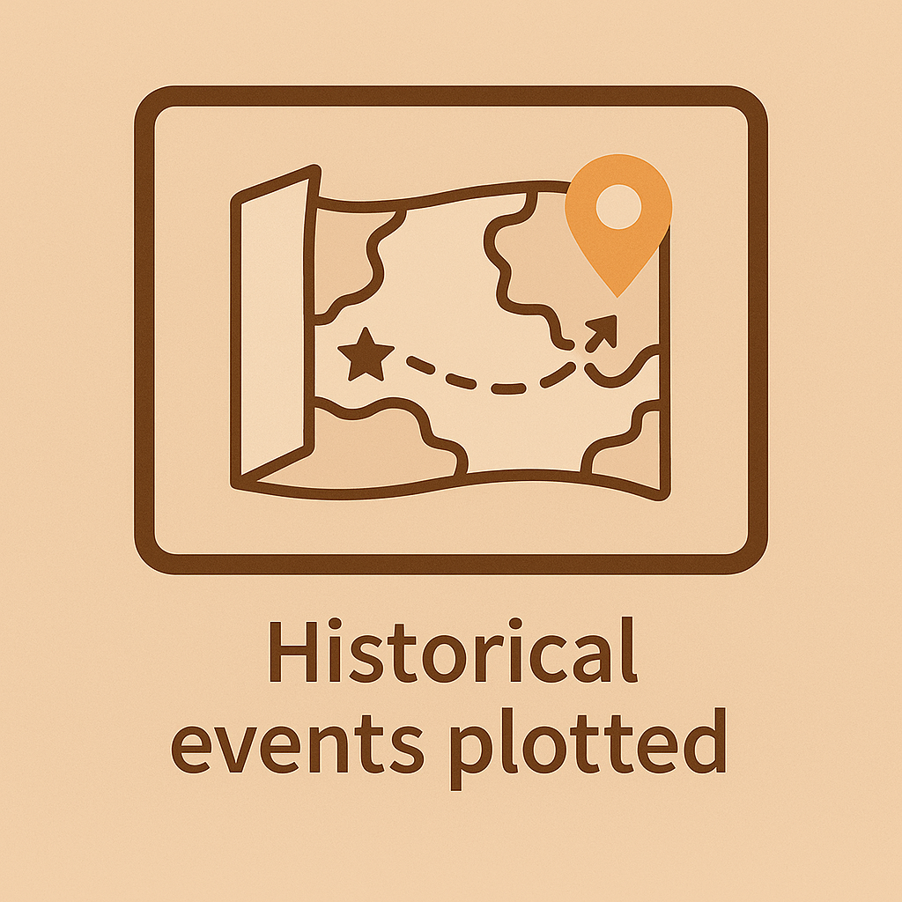

Historical Action Map
This interactive tool maps past events and plots upcoming ones in real time, blending civic engagement with geographic storytelling. The map can show voter outreach, protest attendance, campaign stops, or any other timestamped location-based data.
Key Features:
- Past event markers with hover-over metrics (e.g. turnout, impact)
- Live sign-up and location feed for upcoming actions
- Modular back-end allows for easy adaptation to any civic or community context
- Intended for local campaigns, nonprofits, and mutual aid networks
Stack:
Leaflet.js, HTML/CSS, GitHub Pages, optional Firebase backend (in progress)